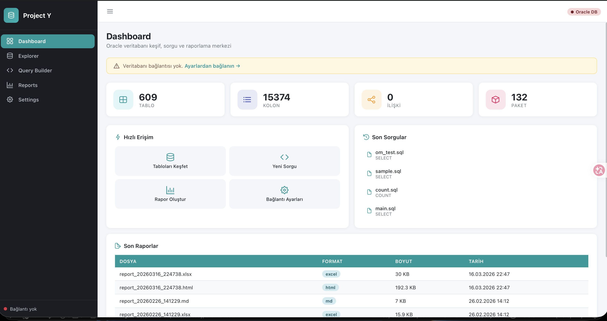
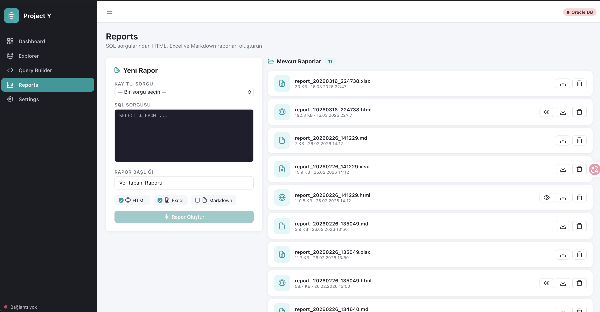

Database Report Studio
A lightweight Jasper-style database reporting tool that helps teams explore schemas, build queries, and export usable reports without unnecessary complexity.
Explore
Schemas and dependencies
Build
Query and report flow
Export
HTML, PDF, and markdown
Runtime
Electron + local backend
Database exploration
Inspect schemas, packages, and dependencies from a single workspace.
Query creation
Use the visual builder to assemble SQL with fewer manual mistakes.
Report output
Generate reusable report artifacts for analysts and business users.
Simple and usable
Designed to feel lighter than Jasper while keeping the workflow practical.
Why this looks professional in a CV
A recruiter can read this product in under a minute and understand scope, value, and technical ownership.
Problem
Database reporting was fragmented across scripts and manual steps.
Solution
A unified desktop studio for exploration, query building, and report export.
Result
Faster reporting cycles with cleaner and reusable deliverables.
System previews
Real screenshots from the application, organized around the main user flow.
Database explorer

Query and report builder

Report output preview
A cleaner, more visual look at how the studio turns raw data into ready-to-share output.
Export preview
Report package
Database report studio
Executive extract
Objects
42
Tables and views included
Queries
18
Reused across report sections
Exports
3
PDF, HTML, and Markdown
Query-to-report flow
Visual build pipeline
Step 1
Select schema
Step 2
Build query
Step 3
Export report